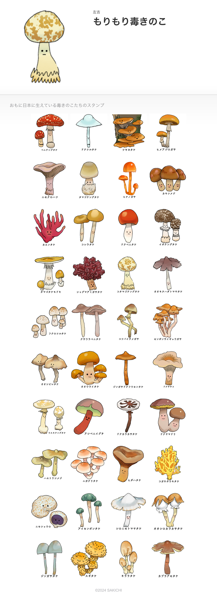
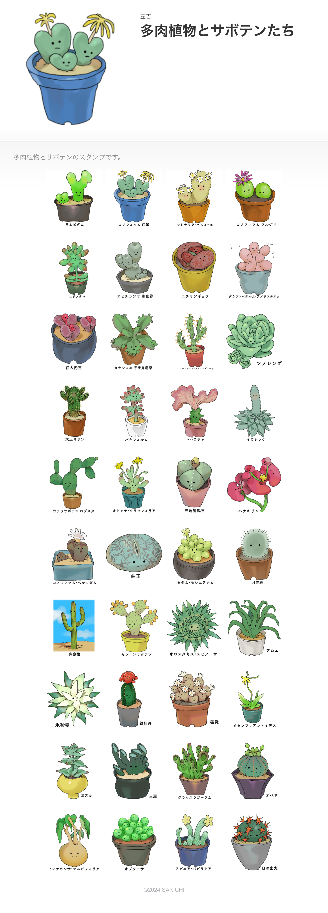
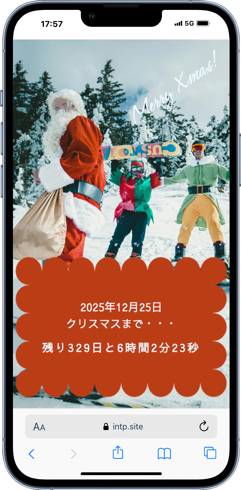

portfolio/other/index.html
portfolio/other/index.html
portfolio/other/index.html
Other
LINEスタンプ
-

『もりもり毒きのこ』
-

『多肉植物とサボテンたち』
https://store.line.me/stickershop/product/26312255/ja?from=sticker
デザインのポイント
趣味で制作したLINEスタンプです。主に日本に生息する毒キノコや、特徴的な形状の多肉植物をモチーフにしました。陰影をつける作業が好きなので、描画の自由度が高いCLIP STUDIO PAINTを活用しています。現在、第2弾の制作も計画中です。
CLIP STUDIO PAINT
個展『かくれんぼする小さな夢』

展示について
株式会社三菱地所さんのサポートのもと、三菱一号館歴史資料室で個展を開催しました。
1. コンセプト
「空想の中でしか生きられない生き物たちが、現実世界にかくれんぼしている」というテーマです。
訪れた方がもし興味を持てば、生き物たちを見つけることができるように、いろいろなところでかくれんぼしていました。
2. 展示の内容
三菱一号館は明治時代の雰囲気を残した建物で、歴史資料室にある家具やインテリアは当時の写真を基に新たに制作されているそうです。設計者のジョサイア・コンドルさんが座っているベンチもあり、この空間の歴史的な魅力を活かしたいと考えたインスタレーションでした。
3. 感想
展示什器の設計から関わることができ、かなり自由に展示をさせていただきました。非常に貴重で楽しい経験で、またこのような機会が訪れることを心から願っています。
InDesign
Photoshop
2025クリスマスまであと何日？
-

『2025クリスマスまであと何日？』
-

デザインのポイント
2025年のクリスマス（12月25日）までのカウントダウンサイトを授業で作成しました。現在の時刻とクリスマスの日付を取得し、残り時間を○日○時間○分○秒の形で表示します。setInterval を使って1秒ごとに更新するため、リアルタイムで変化するのもポイントです。これにより、クリスマスが近づくワクワク感を演出しました。
JavaScript
html
css
ルドンうらない
デザインのポイント
自主制作で作成した、美術展『ルドン展 海へのまなざし』のWebサイト内で楽しめる『ルドンうらない』です。ルドンに関連するモチーフを使って、今日の運勢やラッキーアイテムを占うことができます。
JavaScript
html
css
CLIP STUDIO PAINT
スケッチ

デザインのポイント
趣味で描いている、お面や彫刻、動物のスケッチです。特に裸婦を書くのが得意ですが、最近は描ける機会がないのが残念です。
鉛筆
水彩絵具